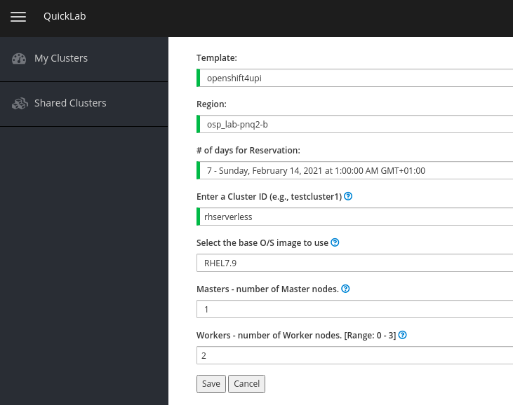

Setup
Prerequisites
For this lab you need an Openshift 4 cluster with cluster-admin privileges. You can create an Openshift 4 Cluster in QuickLab. Go to https://quicklab.upshift.redhat.com, and click in New Cluster. Use openshift4upi template, and the region you want. Use 1 master and 2 workers.
| You need to be logged in Red Hat VPN to access quicklab |
| Red Hat Openshift Serverless and Knative CLI is installed in Exercise 2 |
